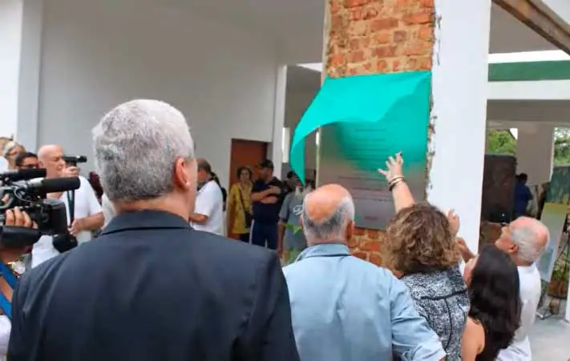

10 anos do Ecomuseu Ilha Grande
No dia 13 de dezembro de 2017 foi realizado o Seminário em comemoração aos 10 Anos do Ecomuseu Ilha Grande. O evento contou com mesas de debate...
PlayNo dia 13 de dezembro de 2017 foi realizado o Seminário em comemoração aos 10 Anos do Ecomuseu Ilha Grande. O evento contou com mesas de debate...
PlayCelebrando os 70 anos da Universidade do Estado do Rio de Janeiro (UERJ), o Ecomuseu Ilha Grande apresenta algumas imagens dos seus núcleos Museu do Cárcere, Museu do Meio Ambiente...
PlayEcomuseu Ilha Grande na Semana do Meio Ambiente 2022 e Dia do Oceano 2022. Vídeo com as atividades realizadas na escolas da Vila do Abraão, Aventureiro e Provetá, um momento de trocas e ...
PlayO Ecomuseu Ilha Grande da Uerj está promovendo uma campanha de doação de livros para novas bibliotecas comunitárias nas praias da região. Os materiais solicitados são gibis, livros...
PlayO Coordenador do Ecomuseu Ilha Grande, Gelsom Rozentino, convida para reabertura do espaço reformado da primeira instalação inaugurada no Ceads, em 1995...
PlayO prefeito Tuca Jordão, representando o município de Angra dos Reis, participou, junto com o governador Sérgio Cabral e o reitor da Uerj, Ricardo Vieiralves, da inauguração...
PlayAborda o projeto Ecomuseu – Uerj, em Vila Dois Rios (Ilha Grande/RJ), que visa a preservação ambiental. Traz a história do presídio, além de antigos e novos moradores. Envolve quatro...
Play.webp)
Para quem quiser mergulhar um pouco no modo de vida caiçara, típico do litoral sul fluminense a opção é o ecomuseu ilha grande, que une cultura, natureza e muita história...
Play
Continuando a viagem, nosso destino agora era a Vila de Dois Rios. Um dos lugares mais encantadores de toda Ilha. Com uma trilha moderada pela frente até a vila...
Play
Narra parte da história de Vila Dois Rios, Ilha Grande – RJ, onde encontram-se os escombros do Instituto Penal Cândido Mendes. Destaca também informações sobre a vida dos índios...
Play
A edição especial traz a história de Ilha Grande (RJ) e destaca o local onde funcionava a Colônia Penal Cândido Mendes, em Vila Dois Rios. Ainda aborda o CEADS, pertencente à Uerj...
Play
Os acordes de guitarra e de violão estão em alta para Gelsom Rozentino, coordenador do Ecomuseu da Ilha Grande/Uerj, quando não está trabalhando. Confira! Reedite-se!
PlayO Centro Multimídia do Ecomuseu Ilha Grande é uma ótima fonte de informação sobre a história da ilha. Para aqueles interessados em aprender mais sobre o presídio da Ilha Grande, o centro recomenda alguns filmes relacionados ao tema. Esses filmes ajudam a compreender melhor a realidade dos presos e o funcionamento do presídio, além de abordar questões sociais e políticas da época.
Memórias do Cárcere é um filme brasileiro de 1984, do gênero drama biográfico, roteirizado e dirigido por Nelson Pereira dos Santos. O roteiro é uma adaptação do livro homônimo de Graciliano Ramos. É contada a fase em que o escritor...
Saiba mais400 contra 1 - Uma História do Crime Organizado é um filme brasileiro dirigido por Caco Souza. Com estreia em 6 de agosto de 2010, aborda a história do Comando Vermelho, uma das maiores organizações criminosas do Brasil...
Saiba maisQuase Dois Irmãos é um filme brasileiro de 2005, do gênero drama, dirigido por Lúcia Murat. Miguel é um senador que decide reencontrar Jorge, amigo de infância e atualmente poderoso traficante de drogas do Rio de Janeiro, para negociar....
Saiba maisEntre em contato através dos nossos telefones, rede sociais e e-mail institucional.
Contato